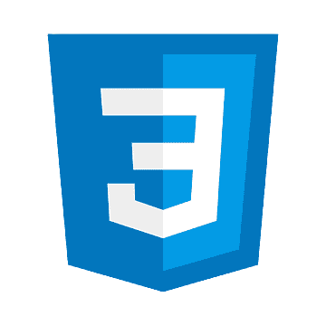
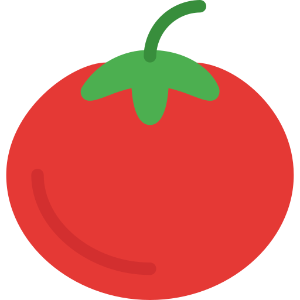

About me
I am a 19 year old student from Malaysia with a strong passion for programming. I was inspired to start programming in June 2019 while exploring solutions to mathematical problems on Project Euler. My very While I started with Python, I soon began to learn other languages like Java.
So far, my favourite subject is data structure and algorithms. It awes me how brilliant those methods are in solving various programming problems and improving efficiency of the program.
Stay hungry, stay foolish.
Skills
-
Python
-
Java
-
SQLite
-
Web Development
 -
Data Structures and Algorithms
-
C
-
Octave
Python is the first programming language that I started with, and it remains as the primary language I use for various purposes. With over a year of experience, provided with documentation, I am almost able to learn various new libraries in short time. I code in python mainly for learning data analytics with pandas and numpy, making small games using pygame, making web pages with Flask and for learning algorithms such as solving maze using A* Search.
The second language that I learned, a few months after learning Python. My initial goal of learning Java was to understand the concepts of Object-Oriented Programming, but eventually I discovered that despite more codes to be written in Java, its syntax is more detailed than Python. I have used Java to develop two Android Apps, and learnt algorithms following Algorithms, part I from Coursera.
I learned about Sql from CS50x. I used it in Android and web development projects. Currently, I am able to use all query methods but I am still not that comfortable with more complicated queries.
I am rather new with HTML, CSS and Javascript especially. However, I am fine with basics of HTML and CSS. I have not done much in web development, and frankly speaking, this webpage is one of the best web pages I've done so far. I am still not very familiar with interactive webpage with resizable content. As a result, this page cannot be viewed in mobile yet.
I am familiar with basic algorithms and data structures, especially sorting and searching algorithms such as mergesort, quicksort and depth-first search. When I know how to solve a problem, I can usually code it out.
I learnt C from CS50x as well. I could use C equally good as Java, as long as pointers is not involved. While learning, its superior speed impressed me but its pointers and lack of garbage collection made it hard for me to progress more for now.
I learned Octave when I was attending Machine Learning from Coursera. I am able to use it to solve linear algebra problems and plot simple graphs.
Notable Projects
Here are a few of my best projects
-
Pokedex App

-
Pomodoro Focus
 -
CS50x
A pokedex app that allows users to access pokemons' informations. This is technically my first android project that took me about a week to complete. Although it might look simple, but it has a significant meaning to me as it is my first big project that took me over 5 days.
Some previews:


An efficiency time management app that helps the user to stay focus using pomodoro technique. This is my second android project which also took me a week to complete. It is my final project to CS50x. A short description video can be found here.
Some previews:


CS50x is an online introduction to computer science course provided for free by Harvard. It gave me a strong foundation and better understanding to the subject itself. In order to maximize my gain, I've completed three out of four tracks provided by the course, which are android, game and web, all of which can be found on my github repositories.